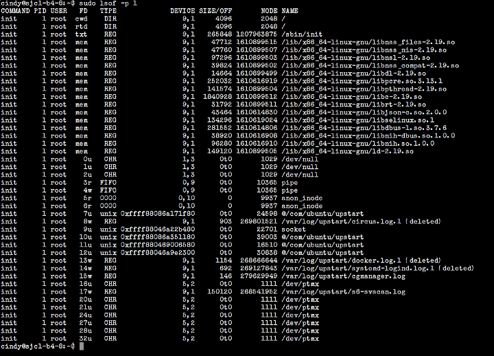
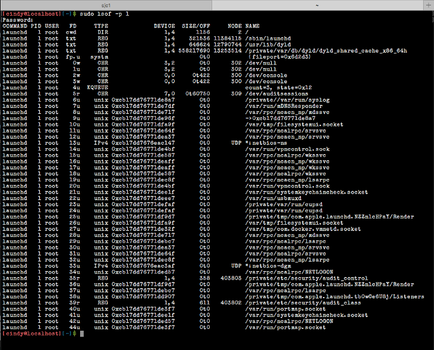
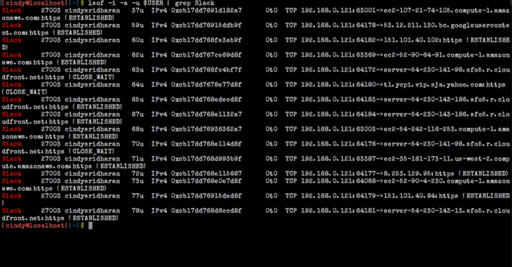
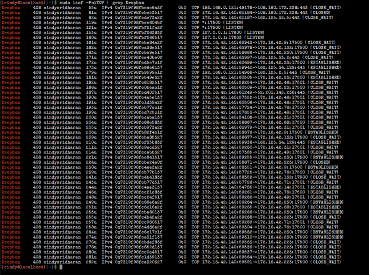
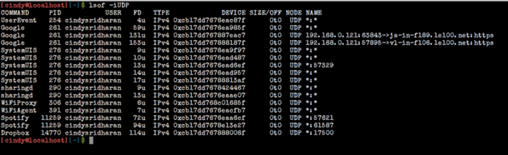
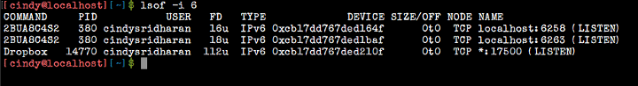

Удивительно полезный инструмент: lsof
Автор оригинала: Cindy Sridharan
Я привык искать проблемы в коде или в системе, пользуясь логами или показателями мониторинга, которые выводятся на симпатичных панелях управления с простым и понятным интерфейсом. Однако, если по какой-то причине данные на панель управления не поступают, или логи какой-нибудь службы недоступны, отладка усложняется. Теперь подобных проблем немного, встречаются они редко, но они, всё же, случаются. Поэтому и в наше время весьма ценно знание инструментов, которые помогают понять, что не так с неким процессом на каком-нибудь компьютере.
Когда я отлаживаю нечто, для чего нет логов или показателей мониторинга, я подключаюсь к удалённому компьютеру по ssh. Конечно, это подход ограниченный, он не так уж и прост, не соответствует модным веяниям DevOps, или всем тем современным штучкам, которых можно начитаться в интернете, но он на удивление хорошо подходит мне для того, чтобы быстро проанализировать ситуацию.
Это, на самом деле, похоже на использование команды print при отладке программ. Тут мне сразу хотелось бы уточнить, что я не SRE и не инженер по эксплуатации в сфере IT. Основная сфера моей деятельности — разработка.
Иногда мне приходится разворачивать код, который я написал, и отлаживать его, когда что-то идёт не так. Почти всегда, когда я оказываюсь в новой для себя системе, самым сложным для меня оказывается поиск чего-либо. Например — выяснить, какой порт прослушивает процесс. Или, что требуется чаще, узнать, в какой файл пишет логи некий демон. И если даже мне удаётся найти ответы на эти вопросы, воспользовавшись кучей вызовов команд ps, pstree и ls, и великим множеством обращений к команде grep, часто «ответы», которые я нахожу, либо не содержат ничего полезного, либо оказываются неверными.
Если бы то, что вы сейчас читаете, было бы выступлением Раймонда Геттингера, ведущего разработчика CPython, тут настал бы момент, когда аудитория ждёт фразы: «должен быть лучший способ».
И, на самом деле, такой способ есть. Средством, которым я постоянно пользуюсь для поиска в системе того, что мне нужно, стал отличный инструмент, который называется lsof.
Утилита lsof (её название звучит как el-soff, хотя некоторым больше нравится нечто вроде liss-off или даже el-es-o-eff) — это невероятно полезная команда, которая выводит список всех открытых файлов (LiSts all Open Files).
Команд lsof особенно хороша для поиска чего-либо, так как в Unix-подобных системах всё является файлом. Это — на удивление универсальный отладочный инструмент, который довольно легко способен заменить утилиты ps, netstat, да и некоторые другие тоже.
Опции lsof
Ветеран SRE, который занимался этим делом за десятилетия до того, как появился термин «SRE», однажды сказал мне: «Я перестал изучать опции lsof как только узнал все те, которые мне нужны. Изучи самое важное, и это будет всем, что тебе когда-либо понадобится».
Утилита lsof имеет обширный набор опций.
NAME
lsof - list open files
SYNOPSIS
lsof [ -?abChKlnNOPRtUvVX ] [ -A A ] [ -c c ] [ +c c ] [ +|-d d ] [+|-D D ] [ +|-e s ] [ +|-f [cfgGn] ] [ -F [f] ] [ -g [s] ] [ -i [i] ] [-k k ] [ +|-L [l] ] [ +|-m m ] [ +|-M ] [ -o [o] ] [ -p s ] [ +|-r[t[m<fmt>]] ] [ -s [p:s] ] [ -S [t] ] [ -T [t] ] [ -u s ] [ +|-w ] [ -x[fl] ] [ -z [z] ] [ -Z [Z] ] [ -- ] [names]
Если вы хотите изучит их все — man вам в помощь. Здесь же мне хотелось бы рассказать о тех, которыми обычно пользуюсь я.
▍Опция -u
Опция -u выводит список файлов, открытых конкретным пользователем. Следующий пример показывает, как можно узнать, сколько файлов держит открытыми пользователь cindy.
cindy@ubuntu:~$ lsof -u cindy | wc -l
248
Обычно, если перед параметром некоей опции ставят знак «^» (крышка), который означает отрицание, это приводит к исключению файлов, соответствующих данному параметру, из вывода программы. Вот, например, как можно узнать количество файлов на компьютере, которые открыты всеми пользователями за исключением cindy.
cindy@ubuntu:~$ lsof -u^cindy | wc -l
38193
▍Опция -U
Опция -U позволяет вывести все файлы сокетов домена Unix.
cindy@ubuntu:~$ lsof -U | head -5
COMMAND PID USER FD TYPE DEVICE SIZE/OFF NODE NAME
init 1 root 7u unix 0xffff88086a171f80 0t0 24598 @/com/ubuntu/upstart
init 1 root 9u unix 0xffff88046a22b480 0t0 22701 socket
init 1 root 10u unix 0xffff88086a351180 0t0 39003 @/com/ubuntu/upstart
init 1 root 11u unix 0xffff880469006580 0t0 16510 @/com/ubuntu/upstart
▍Опция -c
Опция -c позволяет вывести сведения о файлах, которые держат открытыми процессы, выполняющие команды, имена которых начинаются с заданных символов. Например, вот какая команда позволит увидеть первые 15 файлов, открытых всеми процессами Python, выполняющимися на компьютере.
cindy@ubuntu:~$ lsof -cpython | head -15
COMMAND PID USER FD TYPE DEVICE SIZE/OFF NODE NAME
python2.7 16905 root cwd DIR 9,1 4096 271589387 /home/cindy/sourcebox
python2.7 16905 root rtd DIR 9,1 4096 2048 /
python2.7 16905 root txt REG 9,1 3345416 268757001 /usr/bin/python2.7
python2.7 16905 root mem REG 9,1 11152 1610852447 /usr/lib/python2.7/lib-dynload/resource.x86_64-linux-gnu.so
python2.7 16905 root mem REG 9,1 101240 1610899495 /lib/x86_64-linux-gnu/libresolv-2.19.so
python2.7 16905 root mem REG 9,1 22952 1610899509 /lib/x86_64-linux-gnu/libnss_dns-2.19.so
python2.7 16905 root mem REG 9,1 47712 1610899515 /lib/x86_64-linux-gnu/libnss_files-2.19.so
python2.7 16905 root mem REG 9,1 33448 1610852462 /usr/lib/python2.7/lib-dynload/_multiprocessing.x86_64-linux-gnu.so
python2.7 16905 root mem REG 9,1 54064 1610852477 /usr/lib/python2.7/lib-dynload/_json.x86_64-linux-gnu.so
python2.7 16905 root mem REG 9,1 18936 1610619044 /lib/x86_64-linux-gnu/libuuid.so.1.3.0
python2.7 16905 root mem REG 9,1 30944 1207967802 /usr/lib/x86_64-linux-gnu/libffi.so.6.0.1
python2.7 16905 root mem REG 9,1 136232 1610852472 /usr/lib/python2.7/lib-dynload/_ctypes.x86_64-linux-gnu.so
python2.7 16905 root mem REG 9,1 77752 1610852454 /usr/lib/python2.7/lib-dynload/parser.x86_64-linux-gnu.so
python2.7 16905 root mem REG 9,1 387256 1610620979 /lib/x86_64-linux-gnu/libssl.so.1.0.0
Вот ещё интересный пример. Например, имеется некоторое количество процессов Python 2.7 и Python 3.6, при этом надо выяснить, какие файлы открыты процессами, которые не являются процессами Python 2.7. Сделать это можно так:
cindy@ubuntu:~$ lsof -cpython -c^python2.7 | head -10
COMMAND PID USER FD TYPE DEVICE SIZE/OFF NODE NAME
python 20017 root cwd DIR 9,1 4096 2048 /
python 20017 root rtd DIR 9,1 4096 2048 /
python 20017 root txt REG 9,1 3345416 268757001 /usr/bin/python2.7
python 20017 root mem REG 9,1 11152 1610852447 /usr/lib/python2.7/lib-dynload/resource.x86_64-linux-gnu.so
python 20017 root mem REG 9,1 6256 805552236 /usr/lib/python2.7/dist-packages/_psutil_posix.x86_64-linux-gnu.so
python 20017 root mem REG 9,1 14768 805552237 /usr/lib/python2.7/dist-packages/_psutil_linux.x86_64-linux-gnu.so
python 20017 root mem REG 9,1 10592 805451779 /usr/lib/python2.7/dist-packages/Crypto/Util/strxor.x86_64-linux-gnu.so
python 20017 root mem REG 9,1 11176 1744859170 /usr/lib/python2.7/dist-packages/Crypto/Cipher/_ARC4.x86_64-linux-gnu.so
python 20017 root mem REG 9,1 23560 1744859162 /usr/lib/python2.7/dist-packages/Crypto/Cipher/_Blowfish.x86_64-linux-gnu.so
▍Опция +d
Опция +d позволяет выяснить, какие папки и файлы открыты в некоей директории (но не в её поддиректориях).
cindy@ubuntu:~$ lsof +d /usr/bin | head -4
COMMAND PID USER FD TYPE DEVICE SIZE/OFF NODE NAME
circusd 1351 root txt REG 9,1 3345416 268757001 /usr/bin/python2.7
docker 1363 root txt REG 9,1 19605520 270753792 /usr/bin/docker
runsvdir 1597 root txt REG 9,1 17144 272310314 /usr/bin/runsvdir
▍Опция -d
Пожалуй, опция -d — это одна из тех, которыми я пользуюсь чаще всего. Уступает она только опции -p. Эта опция позволяет задать список дескрипторов файлов, разделённых запятой, которые надо включить в вывод или исключить из него. Вот что говорит об этом документация:
Список исключается из вывода, если все записи в наборе начинаются со знака «^». Список будет включён в вывод, если ни одна запись не начинается с «^». Смешивание записей разных видов не разрешается.
В списке может присутствовать диапазон номеров дескрипторов файлов при условии, что ни один из его членов не пуст, оба члена являются числами, и завершающий член больше начального - то есть: «0-7» или «3-10».
Диапазоны могут быть использованы для исключения записей из вывода, если перед ними стоит префикс «^», то есть - «^0-7» исключает все дескрипторы с 0 по 7.
Вывод по нескольким номерам дескрипторов файлов объединяется в соответствии с правилами логического ИЛИ, в один набор, прежде чем к ним будет применена операция логического И.
Когда в наборе встречаются и включаемые и исключаемые члены, lsof сообщает об ошибке и завершает работу с ненулевым кодом возврата.
▍Опция -p
Не могу вспомнить, когда я не пользовался бы опцией -p, работая с lsof. Она позволяет вывести все файлы, открытые процессом с указанным при вызове команды PID.
Например, вот как в Ubuntu выглядит вывод информации обо всех файлах, открытых процессом, скажем, с PID 1.

Вывод команды lsof, вызванной с опцией -p в Ubuntu
Вот что выводится на моём MacBook Air.

Вывод команды lsof, вызванной с опцией -p на MacBook Air
▍Опция -P
Опция -P подавляет, для сетевых файлов, преобразование номеров портов в имена портов. Её полезно использовать в тех случаях, когда разрешение имён портов работает неправильно.
Эту опцию можно использовать с другой опцией — -n, которая подавляет преобразование сетевых номеров в имена хостов для сетевых файлов. Она, кроме того, полезна при неправильно работающем разрешении имён хостов.
Подавление обоих вышеупомянутых преобразований иногда может ускорить работу lsof.
▍Опция -i
Опция -i позволяет вывести сведения о файлах, интернет-адреса которых соответствуют заданному адресу. Если при вызове команды не задавать адреса, эта опция позволяет вывести сведения обо всех интернет-сокетах и сетевых файлах.
С помощью lsof можно, например, посмотреть на TCP-соединения, открытые клиентом Slack или Dropbox. Ради интереса попробуйте посмотреть, сколько соединений открывают вкладки Chrome, каждая из которых является отдельным процессом. Посмотрим на соединения, открытые Slack:
lsof -i -a -u $USER | grep Slack

Вывод сведений о соединениях, которые открыл Slack
А вот что с помощью lsof можно узнать о TCP-сокетах, открытых клиентом Dropbox:

Вывод сведений о соединениях, которые открыл Dropbox
Lsof позволяет просматривать и сведения об UDP-соединениях с помощью команды lsof -iUDP.

Вывод сведений об UDP-соединениях
С помощью команды lsof -i 6 можно вывести список открытых соединений IPv6.

Вывод сведений об IPv6-соединениях
▍Опция -t
Опция -t подавляет вывод всей информации за исключением ID процессов. Я часто использую её, если хочу перенаправить список PID какой-нибудь другой команде, в основном — kill-9.
cindy@ubuntu:~$ lsof -t /var/log/dummy_svc.log
1235
2171
2188
2189
16758
16761
16762
Комбинирование опций
Обычно lsof объединяет результаты использования нескольких опций, следуя принципу логического ИЛИ. Если задать опцию -a, результаты будут объединены по правилам логического И.
Конечно, есть несколько исключений из этого правила, тут, как обычно, рекомендовано взглянуть на документацию, но если в двух словах, то работает это так:
Обычно заданные опции списка объединяются по принципу логического ИЛИ, то есть, если указать опцию -i без указания адреса, и опцию -u foo, будет выведен список всех сетевых файлов или файлов, принадлежащих процессам, владельцем которых является пользователь «foo». Из этого правила есть несколько исключений:
Так как всё это - команды для исключения результатов из вывода, они применяются без использования принципов логического ИЛИ или И, они воздействуют на вывод команды до применения любых других критериев отбора.
Опцию -a можно использовать для обработки вывода по принципу логического И. Например, если использовать опции -a, -U и -u foo, будет выведен список только файлов сокетов UNIX, которые принадлежат процессам, владельцем которых является пользователь «foo».
История большой победы
Пожалуй, я тут немного преувеличиваю, «победа» была не такой уж и большой, но когда случилось то, о чём пойдёт речь, lsof оказался очень кстати.
Пару недель назад мне нужно было поднять один экземпляр нового сервиса в тестовом окружении. Тестовый сервис, о котором идёт речь, не был подключён к рабочей инфраструктуре мониторинга. Я попытался выяснить, почему процесс, который был только что запущен, не зарегистрировал себя в Consul, как результат, его не могли обнаружить другие сервисы. «Так, не знаю, в чём дело, но взгляну-ка я на логи», — подумал я. Если что-то работает не так, как ожидается, я смотрю логи сервиса, работу которого пытаюсь наладить, и в большинстве случаев логи сразу указывают на корень проблемы.
Сервис, о котором идёт речь, запускался с использованием менеджера процессов и сокетов circus. Логи для процессов, работающих под circus, хранятся в специальном месте на хосте — назовём его /var/log/circusd. Более новые сервисы на хосте запускались другим менеджером, s6, который пишет логи в другое место. Затем, есть ещё и логи, которые генерирует socklog/svlogd, которые, опять же, оказываются где-то ещё. Короче говоря, в логах недостатка не было, и главная проблема заключалась в том, чтобы обнаружить, в какой дескриптор файла пишет лог мой сбойный процесс.
Так как я знал, что процесс, с проблемами которого я пытался разобраться, работает под circus, подключение с помощью команды tail к /var/log/circusd/whatever_tab_completion_suggested позволило бы мне посмотреть на потоки stdout и stderr этого процесса. Правда, просмотр лога мне не дал абсолютно ничего. Быстро стало ясно, что я читал не тот лог-файл, и действительно, при ближайшем рассмотрении оказалось, что в /var/log/circusd было два файла: stage-svcname-stderr.log и staging-svcname.stderr.log. Я тогда воспользовался для автозавершения команды клавишей Tab, и тот файл, который был выбран автоматически, оказался не тем, что был нужен мне.
Один из способов понять, какой файл был действительно использован интересующим меня процессом для логирования, заключался в использовании команды lsof -l filename, которая вывела бы сведения обо всех процессах, имеющих открытые дескрипторы файлов. Оказалось, что ни с одним из работающих процессов не было ассоциировано лог-файла, который я просматривал с помощью команды tail, что означало, что этот файл можно было безопасно удалить.
Просмотр другого файла тут же позволил выяснить, почему процесс давал сбой (при этом circus перезапускал его после сбоя, что приводило к бесконечному циклу сбоев-перезапусков).
Итоги
Чем чаще я использую команду lsof, тем больше других инструментов она заменяет и тем больше полезного позволяет мне узнать. Надеюсь, теперь у lsof есть шанс принести пользу и вам.